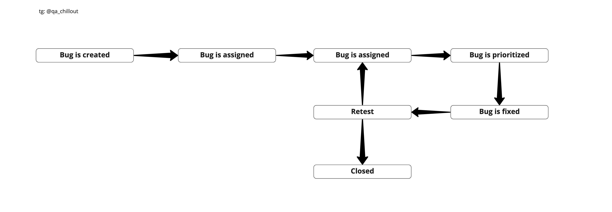

В тестировании нет четких определений, как в физике, математике, которые при перефразировании становятся абсолютно неверными. Поэтому важно понимать процессы и подходы. В данной статье разберем основные определения теории тестирования.
Полный текст статьи читайте в источнике: https://habr.com
Тестирование программного обеспечения (Software Testing) — проверка соответствия реальных и ожидаемых результатов поведения программы, проводимая на конечном наборе тестов, выбранном определённым образом.
Цель тестирования — проверка соответствия ПО предъявляемым требованиям, обеспечение уверенности в качестве ПО, поиск очевидных ошибок в программном обеспечении, которые должны быть выявлены до того, как их обнаружат пользователи программы.
Дефект (bug) — отклонение фактического результата от ожидаемого.
Жизненный цикл бага: 
Заполните информацию о себе. Это займет меньше минуты.